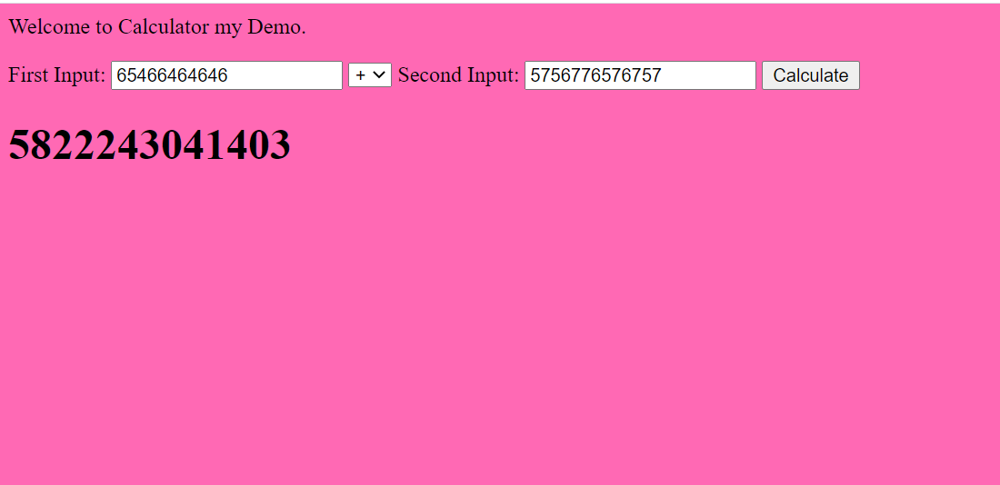
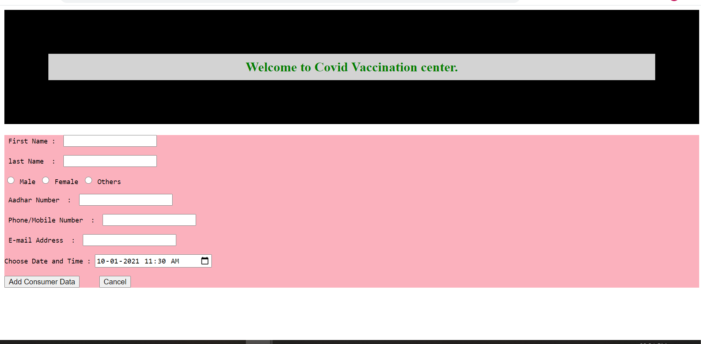
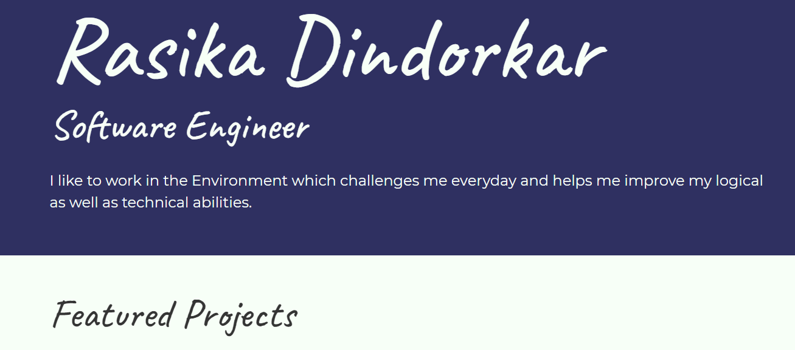

Rasika Dindorkar
Software Engineer
I like to work in the Environment which challenges me everyday and helps me improve my logical as well as technical abilities.
Featured Projects
View selected projects below. More information can be found at My git hub account.
Simple Calculator using JavaScript (01/2021 - 01/2021)
User can enter use this application for the simple calculation purpose in day to day life. Using this Application, you can add, delete, multiply, and devide the two numbers.
View Source codeCovid Vaccination Application (01/2021 - 01/2021)
This Covid Vaccination Application helps to track the data of people who has vaccinated and helps goverment to vaccinate people and keep track of it. role of mine in this project is core development and testing basic functionality manually.
View Source codeResume building using HTML/CSS (02/2021 - 02/2021)
This Project helps me to build creative resume of mine, in which I can show my HTML/CSS skills, also helps to highlight my others skills in creative manner. I have added my Work experience, education, social-media contact details.
View Source codeWork Experience
Working in the IT Company since 2 years, Worked on diffenrent technologies like Java, JavaScript, HTML, CSS, SQL, Angular.
Software Engineer
Great Software Laboratory, Pune.
20th May 2019
GS Lab is a leading software product engineering & development company providing services to enterprises.
Tasks/Achievements list:
- Responsible for Developing software.
- Bug Fixing, Enhancements of Software with good quality of code.
- Supports on customer issues facing related to Software Product and provide Hot fix to customer.
- Achievement - Awarded with the "Pat on the Back".
Education
Postgraduation Diploma in Centre for Development of Advanced Computing
PG-DAC, IASCD Akudi, 08/2018 - 01/2019
Completed PG-Diploma and placed.
Bachelor of Engineering
MET, Bhujbal knowledge City, College of Engineering, Nasik, 7/2012 - 05/2016
Completed Bachelor of Engineering in the Electronics.
Diploma in Electronics and Telecommunication
Shhjb Polytechnic, Chandwad, 06/2009 - 04/2012
Completed Diploma in the Electronics and Telecommunication.